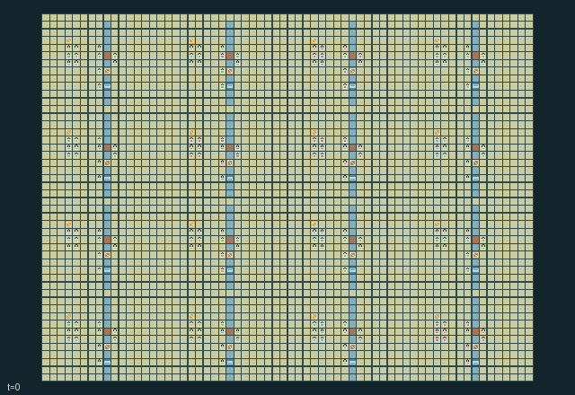

GI230 · Winter Road Confederation

Supply two imported provision crates to each of sixteen settlements while managing costly, seasonal and contested travel infrastructure.
Identity and original contract
192 independently actionable roles; 23 discrete commands per role; 224 native observation columns per role; original horizon 896 steps. Declared per-step reward range: -64 to 64. Observation regime: partially_observable.
Source SHA-256: 4131c3b22a610ef51cb5cd6ee32ff15fc21f4355ce0d90c7c98906edd7635d39
The objective, rewards, population, map and horizon remain original. A preview is not a success claim.
Objective and gameplay
Supply two imported provision crates to each of sixteen settlements while managing costly, seasonal and contested travel infrastructure.
Foreign traders use individually operated checkpoints, temporary team permits, toll purses and supplied ferries. Loaded traffic consumes road strength. Builders restore shared crossings, scouts can damage them or raid finite provisions, and surveys can be relayed locally. Connected perimeter routes provide costly alternatives.
- The map is a square-grid territorial plain with 16 settlements and 192 independently controlled actors. Twelve consecutive IDs share one allegiance; traveling haulers begin at a neighboring checkpoint.
- Build roads with material collected from home. Roads remove the plain's one-tick movement recovery, but each loaded entry consumes one durability level.
- Bridge entry needs strength 2; during deep frost it needs 3. Every 64 ticks the season advances through sailing, deep frost and thaw; ferries sail only in season 0.
- Diplomats at their own checkpoint can open it or change the foreign toll. A visitor may buy an eight-tick team permit to use a closed crossing, while still paying its entry toll.
- Ferry operators spend construction material to add two trips. Every rider consumes one trip; foreign riders also pay one coin to the landing's settlement.
- Import a provision from another settlement to satisfy its order. Scouts may raid stored provisions or sabotage a road; these are physical state changes with competing rewards.
- Surveyors and scouts can inspect one cell four steps ahead and relay its stored location and condition to actors within eight steps.
- This territorial scene is authored data only. No replay, JAX compatibility, throughput, strategic quality or learning result is claimed.
Ending: Terminate when all sixteen received counters reach 2; otherwise truncate at t=896. No actor is automatically eliminated.
What this game explores
Information, sensing & communication: Who knows a fact, when it was measured, and whether it was communicated are separate state variables. Test memory or communication using only the same role-visible evidence.
Commitment, exchange & governance: Promises consume time, liquidity, access or material. Separate an announced agreement from a binding commitment and from its eventual delivery; log cancellation and expiry too.
Complementary production & service: A useful outcome requires ordered stages, scarce equipment or another role's capability. Measure real completed products and resource circulation rather than counting intermediate actions as success.
Joint transport & shared access: Positions, load geometry, occupancy and persistent access constrain whose action can succeed next. Distinguish physical handoff, shared controls and simultaneous force from a cosmetic cooperation label.
Team opposition & interception: Cooperation within a team can coexist with opposition between teams. Preserve team membership, capture and possession rules, and report each team's outcomes instead of assuming a single shared return.
Survival, protection & rescue: Protection and repair alter another role's future feasible actions. Record losses, exposure, rescue and infrastructure as well as delivery; survival is determined by the actual kernel.
These are questions supported by rule structure, not observed learning effects.
Play it: operating walkthrough
crucibles play --game gi230Keep Python running and open its printed address. Select this game, set a seed and press Create session. The game itself is always English.
Assign a role range to Host with Assign / take over, or Assign all roles. Invite a second participant with Create player invitation, then assign a disjoint subset. Every original role is available.
For every owned role choose a legal command and press Queue. Arrow keys / WASD queue a declared directional action for the current role camera when available. Space or Advance one joint step advances everyone together. Non-directional games use the selectors.
Unqueued roles use the labelled untrained uniform-legal policy. Take over or release roles before the next step without resetting. Full-state debug is privileged and permanently logged; role cameras preserve permissions. Close the session to retain logs. Server restart does not restore sessions.
Complete command reference
IDs and English labels exactly match the manifest. Availability depends on role, resources, location and phase. An available action can still have no productive effect.
0·Wait; no movement
1·Move north
2·Move east
3·Move south
4·Move west
5·Face north
6·Face east
7·Face south
8·Face west
9·Survey the cell four steps ahead; surveyor or scout
10·Collect construction material at own settlement
11·Build or repair facing land road or bridge with material
12·Load provisions at home or deliver carried provisions abroad
13·Ride an available ferry in season 0
14·Supply ferry charges using one material; ferry operator
15·Open or close owned checkpoint; diplomat
16·Cycle owned checkpoint toll 0/1/2; diplomat
17·Buy an eight-tick team permit at foreign checkpoint
18·Raid provisions from foreign settlement; scout
19·Damage one facing road or bridge level; scout
20·Give cargo first, otherwise material, to facing actor
21·Broadcast the actor's surveyed report
22·Swap tools with actor ahead
Roles and capability identifiers
These original role names describe capabilities, not interchangeable skins. Check each owned role's legal selector before planning handoffs.
agent_0·group 0 / surveyor
agent_1·group 0 / road builder
agent_2·group 0 / ferry operator
agent_3·group 0 / hauler
agent_4·group 0 / scout
agent_5·group 0 / diplomat
agent_6·group 0 / surveyor
agent_7·group 0 / road builder
agent_8·group 0 / ferry operator
agent_9·group 0 / hauler
agent_10·group 0 / scout
agent_11·group 0 / diplomat
agent_12·group 1 / surveyor
agent_13·group 1 / road builder
agent_14·group 1 / ferry operator
agent_15·group 1 / hauler
agent_16·group 1 / scout
agent_17·group 1 / diplomat
agent_18·group 1 / surveyor
agent_19·group 1 / road builder
agent_20·group 1 / ferry operator
agent_21·group 1 / hauler
agent_22·group 1 / scout
agent_23·group 1 / diplomat
agent_24·group 2 / surveyor
agent_25·group 2 / road builder
agent_26·group 2 / ferry operator
agent_27·group 2 / hauler
agent_28·group 2 / scout
agent_29·group 2 / diplomat
agent_30·group 2 / surveyor
agent_31·group 2 / road builder
agent_32·group 2 / ferry operator
agent_33·group 2 / hauler
agent_34·group 2 / scout
agent_35·group 2 / diplomat
agent_36·group 3 / surveyor
agent_37·group 3 / road builder
agent_38·group 3 / ferry operator
agent_39·group 3 / hauler
agent_40·group 3 / scout
agent_41·group 3 / diplomat
agent_42·group 3 / surveyor
agent_43·group 3 / road builder
agent_44·group 3 / ferry operator
agent_45·group 3 / hauler
agent_46·group 3 / scout
agent_47·group 3 / diplomat
agent_48·group 4 / surveyor
agent_49·group 4 / road builder
agent_50·group 4 / ferry operator
agent_51·group 4 / hauler
agent_52·group 4 / scout
agent_53·group 4 / diplomat
agent_54·group 4 / surveyor
agent_55·group 4 / road builder
agent_56·group 4 / ferry operator
agent_57·group 4 / hauler
agent_58·group 4 / scout
agent_59·group 4 / diplomat
agent_60·group 5 / surveyor
agent_61·group 5 / road builder
agent_62·group 5 / ferry operator
agent_63·group 5 / hauler
agent_64·group 5 / scout
agent_65·group 5 / diplomat
agent_66·group 5 / surveyor
agent_67·group 5 / road builder
agent_68·group 5 / ferry operator
agent_69·group 5 / hauler
agent_70·group 5 / scout
agent_71·group 5 / diplomat
agent_72·group 6 / surveyor
agent_73·group 6 / road builder
agent_74·group 6 / ferry operator
agent_75·group 6 / hauler
agent_76·group 6 / scout
agent_77·group 6 / diplomat
agent_78·group 6 / surveyor
agent_79·group 6 / road builder
agent_80·group 6 / ferry operator
agent_81·group 6 / hauler
agent_82·group 6 / scout
agent_83·group 6 / diplomat
agent_84·group 7 / surveyor
agent_85·group 7 / road builder
agent_86·group 7 / ferry operator
agent_87·group 7 / hauler
agent_88·group 7 / scout
agent_89·group 7 / diplomat
agent_90·group 7 / surveyor
agent_91·group 7 / road builder
agent_92·group 7 / ferry operator
agent_93·group 7 / hauler
agent_94·group 7 / scout
agent_95·group 7 / diplomat
agent_96·group 8 / surveyor
agent_97·group 8 / road builder
agent_98·group 8 / ferry operator
agent_99·group 8 / hauler
agent_100·group 8 / scout
agent_101·group 8 / diplomat
agent_102·group 8 / surveyor
agent_103·group 8 / road builder
agent_104·group 8 / ferry operator
agent_105·group 8 / hauler
agent_106·group 8 / scout
agent_107·group 8 / diplomat
agent_108·group 9 / surveyor
agent_109·group 9 / road builder
agent_110·group 9 / ferry operator
agent_111·group 9 / hauler
agent_112·group 9 / scout
agent_113·group 9 / diplomat
agent_114·group 9 / surveyor
agent_115·group 9 / road builder
agent_116·group 9 / ferry operator
agent_117·group 9 / hauler
agent_118·group 9 / scout
agent_119·group 9 / diplomat
agent_120·group 10 / surveyor
agent_121·group 10 / road builder
agent_122·group 10 / ferry operator
agent_123·group 10 / hauler
agent_124·group 10 / scout
agent_125·group 10 / diplomat
agent_126·group 10 / surveyor
agent_127·group 10 / road builder
agent_128·group 10 / ferry operator
agent_129·group 10 / hauler
agent_130·group 10 / scout
agent_131·group 10 / diplomat
agent_132·group 11 / surveyor
agent_133·group 11 / road builder
agent_134·group 11 / ferry operator
agent_135·group 11 / hauler
agent_136·group 11 / scout
agent_137·group 11 / diplomat
agent_138·group 11 / surveyor
agent_139·group 11 / road builder
agent_140·group 11 / ferry operator
agent_141·group 11 / hauler
agent_142·group 11 / scout
agent_143·group 11 / diplomat
agent_144·group 12 / surveyor
agent_145·group 12 / road builder
agent_146·group 12 / ferry operator
agent_147·group 12 / hauler
agent_148·group 12 / scout
agent_149·group 12 / diplomat
agent_150·group 12 / surveyor
agent_151·group 12 / road builder
agent_152·group 12 / ferry operator
agent_153·group 12 / hauler
agent_154·group 12 / scout
agent_155·group 12 / diplomat
agent_156·group 13 / surveyor
agent_157·group 13 / road builder
agent_158·group 13 / ferry operator
agent_159·group 13 / hauler
agent_160·group 13 / scout
agent_161·group 13 / diplomat
agent_162·group 13 / surveyor
agent_163·group 13 / road builder
agent_164·group 13 / ferry operator
agent_165·group 13 / hauler
agent_166·group 13 / scout
agent_167·group 13 / diplomat
agent_168·group 14 / surveyor
agent_169·group 14 / road builder
agent_170·group 14 / ferry operator
agent_171·group 14 / hauler
agent_172·group 14 / scout
agent_173·group 14 / diplomat
agent_174·group 14 / surveyor
agent_175·group 14 / road builder
agent_176·group 14 / ferry operator
agent_177·group 14 / hauler
agent_178·group 14 / scout
agent_179·group 14 / diplomat
agent_180·group 15 / surveyor
agent_181·group 15 / road builder
agent_182·group 15 / ferry operator
agent_183·group 15 / hauler
agent_184·group 15 / scout
agent_185·group 15 / diplomat
agent_186·group 15 / surveyor
agent_187·group 15 / road builder
agent_188·group 15 / ferry operator
agent_189·group 15 / hauler
agent_190·group 15 / scout
agent_191·group 15 / diplomat
Information and observation permissions
Self stock/purse/allegiance plus a 7x7 patch, four detailed nearby actors and local structures. Season and time are public through each row. Survey action samples one cell four steps ahead; broadcasts carry that stored report over distance 8. Remote territory state and other teams' permits remain hidden.
The GIF is full-state debug and may reveal hidden entities or private state. Train on obs[agent], not the picture, state tree or another role's private row. Field slices and visibility are in the original manifest.
Reinforcement-learning integration
import jax
from crucibles_jaxmarl import make
env = make("gi230")
key = jax.random.PRNGKey(0)
key, rk, ak, sk = jax.random.split(key, 4)
obs, state = jax.jit(env.reset)(rk)
actions = env.sample_actions(ak, state)
obs, state, rewards, dones, info = jax.jit(env.step_env)(sk, state, actions)
done = dones["__all__"]Observations are float32 vectors of width 224; actions are scalar int32; masks have 23 entries. Supply all 192 roles each transition. Masked sampling is an engineering reference, not a trained learner.
step_env retains terminal data without reset. step performs outer autoreset and keeps terminal data in info["raw_state"] and info["raw_observation"]. Use dones["__all__"] for episode boundaries; separate completion, failure and time limit in analysis.
JIT or vmap equal identities and shapes. Split independent reset, policy and transition keys. Group different shapes explicitly; do not shrink the population or horizon. Host rendering stays outside training.
Training questions and fair evaluation
Define valid completion from the objective before fitting. Preserve original rewards and also report real deliveries/services, losses, resource state, unresolved episodes and per-role returns. Animation is not a reward signal.
Who knows a fact, when it was measured, and whether it was communicated are separate state variables. Test memory or communication using only the same role-visible evidence.
Promises consume time, liquidity, access or material. Separate an announced agreement from a binding commitment and from its eventual delivery; log cancellation and expiry too.
A useful outcome requires ordered stages, scarce equipment or another role's capability. Measure real completed products and resource circulation rather than counting intermediate actions as success.
Positions, load geometry, occupancy and persistent access constrain whose action can succeed next. Distinguish physical handoff, shared controls and simultaneous force from a cosmetic cooperation label.
Cooperation within a team can coexist with opposition between teams. Preserve team membership, capture and possession rules, and report each team's outcomes instead of assuming a single shared return.
Protection and repair alter another role's future feasible actions. Record losses, exposure, rescue and infrastructure as well as delivery; survival is determined by the actual kernel.
Compare memory, communication or centralized critics under matched actor information. Declare critic access; keep actor inputs role-filtered. Match partner/opponent distributions, masks, compute and checkpoint selection. Final tests never enter fitting or selection.
Independent training runs or source-pairing blocks are inferential units; episodes from one policy are not independent training replications. Save hashes, keys, versions, device, time and cost. Negative, zero, failed and indeterminate outcomes are valid. No trained checkpoint or target score is supplied.
Classification and evidence
Overlapping editorial labels are reading aids, not proof of novelty, difficulty, strategic equivalence or learning effects.
- Information, sensing & communication
- Evidence
manifest.actions.9: Survey the cell four steps ahead; surveyor or scout
- Evidence
manifest.actions.21: Broadcast the actor's surveyed report
- Evidence
scene.rules.6: Surveyors and scouts can inspect one cell four steps ahead and relay its stored location and condition to actors within eight steps.
- Commitment, exchange & governance
- Evidence
manifest.actions.16: Cycle owned checkpoint toll 0/1/2; diplomat
- Evidence
manifest.actions.17: Buy an eight-tick team permit at foreign checkpoint
- Evidence
scene.rules.3: Diplomats at their own checkpoint can open it or change the foreign toll. A visitor may buy an eight-tick team permit to use a closed crossing, while still paying its entry toll.
- Complementary production & service
- Evidence
manifest.actions.11: Build or repair facing land road or bridge with material
- Evidence
scene.rules.5: Import a provision from another settlement to satisfy its order. Scouts may raid stored provisions or sabotage a road; these are physical state changes with competing rewards.
- Joint transport & shared access
- Evidence
manifest.actions.11: Build or repair facing land road or bridge with material
- Evidence
manifest.actions.12: Load provisions at home or deliver carried provisions abroad
- Evidence
manifest.actions.13: Ride an available ferry in season 0
- Team opposition & interception
- Evidence
manifest.task.objective: Supply two imported provision crates to each of sixteen settlements while managing costly, seasonal and contested travel infrastructure.
- Survival, protection & rescue
- Evidence
manifest.actions.19: Damage one facing road or bridge level; scout
Source, receipts and preview limits
The world-only English GIF replays saved untrained legal actions through the original kernel. At most 25 actual endpoints include initial and terminal state; no invented interpolation. It is full-state debug, not the role observation.
Original source, observation slices, manifest and mechanism
Native receipt · Presentation receipt
Engineering passes do not establish learning. Nonzero floating differences remain recorded and undetermined; no new tolerance was introduced. Human scores remain unverified.